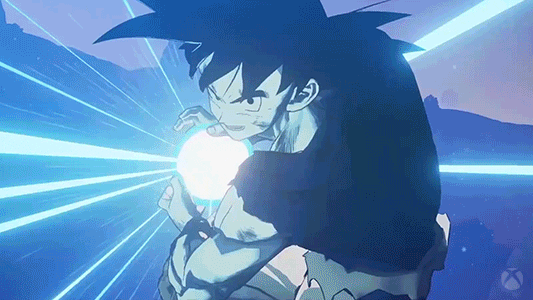

Goku's signature move learnt from master Roshi

Who is the ultimate warrior ?
Goku is a kind hearted gentle saiyan who is a formidable fighter. He loves fighting and likes to face strong opponents. He was sent to planet earth to destory it and reap its resources. However, he was adopted by Gohan and grew up to be a kind soul who ended up saving the earth multiple times from harm's way.
"No, see, I don't think of it like I'm saving the world. The fact is, it's because I'm usually trying to challenge the strongest warriors I can find. That's how this tournament happened, too. But I can't bear the thought of innocent lives getting wiped out just because I want to fight the best. So, I'll do what I can for them." - Son Goku
Vegeta is a cunning ruthless power hungry evil saiyan who got humbled after facing Goku on earth. His personality changed slowly to be more balanced and even tempered though he retained his core priciples of saiyan pride.
"Fine, Kakarot, you are the mightiest Saiyan, I've admitted that much. At least for now. But don't you dare think that this is over. I won't let you keep me in second place forever, feeding on the scraps of your glory. I will surpass you, and even then I'll keep pushing, I'll surpass every single warrior in the Universe. I won't stop until I'm the ultimate number one!" - Vegeta the saiyan prince

| Comparision | Goku | Vegeta |
|---|---|---|
| Height | 175cm or 5.8 feet | 164cm or 5.3 feet |
| Weight | 62kgs | 56kgs |
| Final form | Ultra instinct | Super saiyan blue |
| Wife | Chi Chi | Bulma |
| Children | Gohan & Goten | Bulla and Trunks |